TreeNode - public interface Configuration<TreeNode>
Also see this overview.
| Modifier and Type | Interface and Description |
|---|---|
static class |
Configuration.AlignmentInLevel
Possible alignments of a node within a level (centered, towards or away
from root)
|
static class |
Configuration.Location
Identifies the sides of a rectangle (top, left, ...)
|
| Modifier and Type | Method and Description |
|---|---|
Configuration.AlignmentInLevel |
getAlignmentInLevel()
Returns the alignment of "smaller" nodes within a level.
|
double |
getGapBetweenLevels(int nextLevel)
Returns the size of the gap between subsequent levels.
|
double |
getGapBetweenNodes(TreeNode node1,
TreeNode node2)
Returns the size of the minimal gap of nodes within a level.
|
Configuration.Location |
getRootLocation()
Returns the position of the root node in the diagram.
|
Configuration.Location getRootLocation()
By default the root of the tree is located at the top of the diagram. However one may also put it at the left, right or bottom of the diagram.
| Top (Default) | Left | Right | Bottom |
|---|---|---|---|
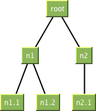 |
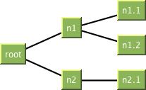 |
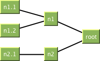 |
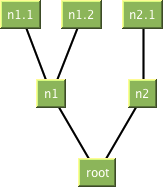 |
Configuration.AlignmentInLevel getAlignmentInLevel()
By default all nodes of one level are centered in the level. However one may also align them "towards the root" or "away from the root". When the root is located at the top this means the nodes are aligned "to the top of the level" or "to the bottom of the level".
| Center (Default) | TowardsRoot ("top of level") | AwayFromRoot ("bottom of level") |
|---|---|---|
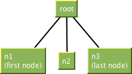 |
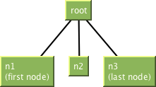 |
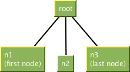 |
Alignment in level when root is at the left:
| Center (Default) | TowardsRoot ("left of level") | AwayFromRoot ("right of level") |
|---|---|---|
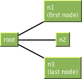 |
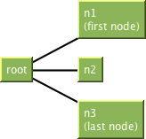 |
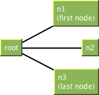 |
Of cause the alignment also works when the root is at the bottom or at the right side.
double getGapBetweenLevels(int nextLevel)
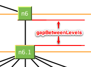
nextLevel - [nextLevel > 0]double getGapBetweenNodes(TreeNode node1, TreeNode node2)
In the layout there will be a gap of at least the returned size between both given nodes.
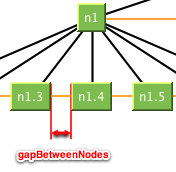
node1 and node2 are at the same level and are placed next to each other.
node1 - node2 -